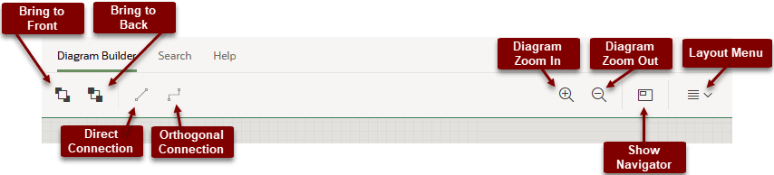
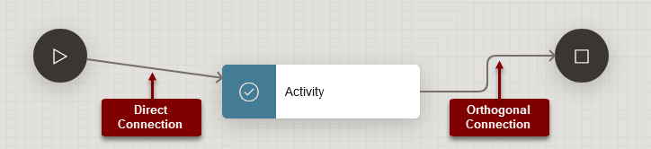
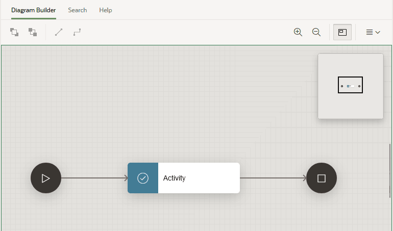
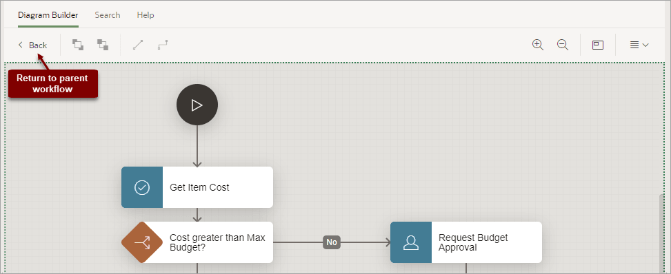
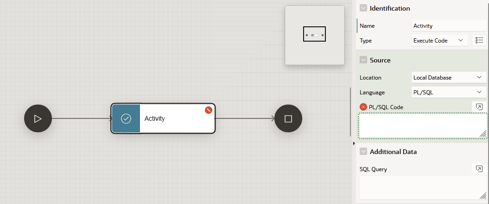
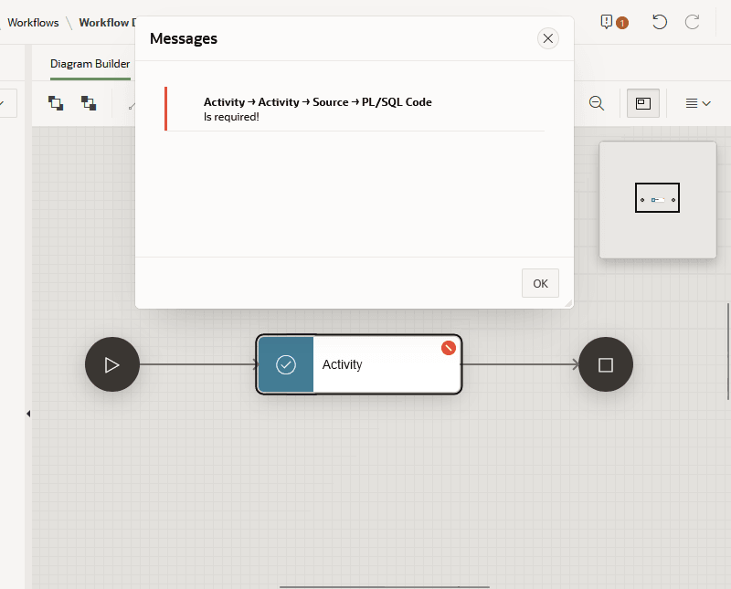
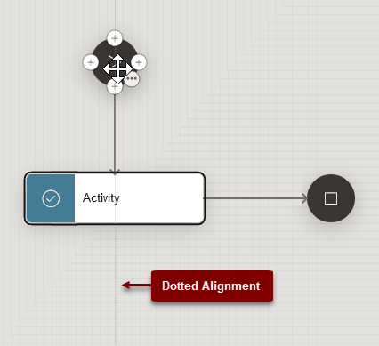
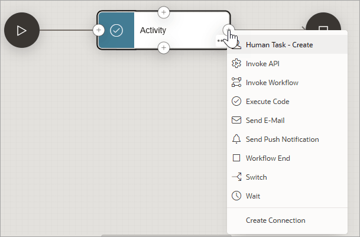
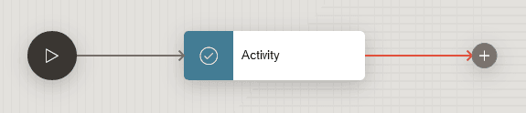
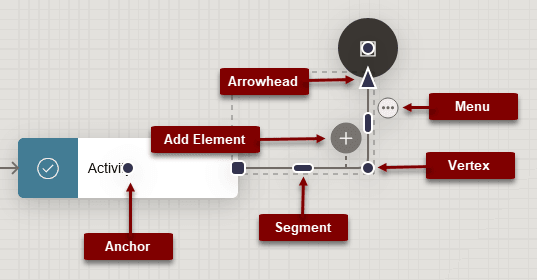

20.1.3 About Workflow Designer
Use Workflow Designer to create or edit workflow definitions.
- create a new workflow
- edit an existing workflow
- view all workflows for your application in tree form
- expand existing workflows to show additional information, including the workflow parameters, activities, transitions, variables, and participants
- use the Workflow Diagram Builder to model workflows
- switch from one workflow definition to another
- view an invoked workflow from the Invoke Workflow activity of the parent workflow
Tip:
For information on navigating Workflow Designer with a keyboard, see About Workflow Keyboard Shortcuts.- The Workflow Designer Tree
The Workflow Designer Tree shows all workflow definitions for your application in tree form. - The Workflow Diagram Toolbar
The diagram toolbar contains tools for interacting with the Diagram Builder. - The Activities Palette
The Activities Palette is a panel that displays all available activity types, including any custom process plugins you have configured. - The Workflow Diagram Builder
The Workflow Diagram Builder is the central pane of the Workflow Designer.
Parent topic: About Workflows
20.1.3.1 The Workflow Designer Tree
The Workflow Designer Tree shows all workflow definitions for your application in tree form.
The Workflow Designer Tree is the left pane in the Workflow Designer. When you expand a workflow definition, APEX shows the parameters for that workflow definition, and each version of the workflow. Expanding a workflow shows the following:
- workflow activities, including activity variables
- outgoing and incoming connections for each activity
- workflow participants
- workflow variables
- Create Activity Above
- Create Activity Below
- Create Activity Variable
- Create Connection
- Duplicate
- Expand All Below
- Collapse All Below
- Delete
- Deactivate
- Create Activity
- Create Variable
- Create Participant
- Expand All Below
- Collapse All Below
- Delete
Caution:
The workflow designer tree displays all items according to the sequence value specified in the properties. This is not the same as the workflow execution order, which is determined by the workflow connections.Parent topic: About Workflow Designer
20.1.3.2 The Workflow Diagram Toolbar
The diagram toolbar contains tools for interacting with the Diagram Builder.
The diagram toolbar at the top of the Diagram Builder contains context-sensitive tools for changing how the workflow displays on the Drawing Area in the center of the page.

Description of the illustration workflow_diagram_toolbar.png
Use Bring to Front and Bring to Back to move activities on the drawing area forward or backward. This can help in places where activities on the drawing area overlap.
Tip:
You can use the Default Router Setting option on the Layout Menu to set the default connection style for the workflow. Changing the default router setting does not update any connectors you have already individually configured.
Description of the illustration workflow_direct_orthogonal.png
Use Diagram Zoom In and Diagram Zoom Out to zoom the drawing area in and out.
Use Show Navigator View to toggle Navigator View, which is an overview that reflects the current state of the drawing area. To pan the drawing area in navigator view, click and drag the visible view rectangle.

Description of the illustration workflow_navigator_view.png
If you are viewing a workflow that is invoked from another workflow, a Back option appears in the toolbar to easily navigate from the invoked workflow back to the parent workflow. 
Description of the illustration workflow_diagram_back.png
Parent topic: About Workflow Designer
20.1.3.3 The Activities Palette
The Activities Palette is a panel that displays all available activity types, including any custom process plugins you have configured.
The Activities Palette is located at the bottom of the drawing area. You can add activities to your workflow by dragging them from the activity palette onto the drawing area.
Once you drag an activity onto the drawing area, a context-sensitive icon appears in the top right corner. The icon is red when there is an error or missing information in the activity. Selecting the activity brings up the activity properties with the error location(s) marked.

Description of the illustration workflow_activity_property_error.png
The Show Messages icon displays the number of errors in the workflow. You can select the icon to display a list of the error messages. You can select a specific error message to bring up the activity properties.

Description of the illustration workflow_activity_error.png
Parent topic: About Workflow Designer
20.1.3.4 The Workflow Diagram Builder
The Workflow Diagram Builder is the central pane of the Workflow Designer.
Tip:
The Diagram Builder does not show workflow variables, parameters, activity variables, or participants. You can view those in the workflow tree.The Drawing Area has a 10 pixel grid in the background. You can use the drawing area to reposition and move activities and connections around. When you reposition activities and links, they move in 10 pixel steps, staying aligned with the grid. If you reposition an activity, the connectors attached to the activity move with it. As you drag an activity, a dotted line appears when the activity aligns horizontally or vertically with other activities on the drawing area.

Description of the illustration workflow_dotted_alignment.png
The drawing area resizes automatically. If you move an activity outside of the drawing area, the drawing area automatically expands to accommodate the activity. If you delete activities, the drawing area shrinks to contain the remaining activities.
You can scroll the drawing area with the vertical and horizontal scrollbars, and zoom in and out with the buttons in the toolbar.
Activity Tools
Activities show two kinds of tools: the Connect tool and the Menu tool. These tools are context-sensitive, and are not visible if they are not available. For example, an end activity does not show the Connect tool, because end activities cannot have outbound connections.
Use the Connect tool when connecting two activities. The connect tool is available on multiple sides (top, right, bottom, or left) of each activity. Clicking the tool opens a menu where you can select the type of activity. APEX creates the new activity on the same side you clicked the connect tool on.

Description of the illustration workflow_activity_connect_menu.png
You can also use the Connect tool to create a new connection. Drag the end of the connection over an existing activity to connect it, or drag out from the connection tool on the existing activity to draw a new connection.

Description of the illustration workflow_new_connection_no_end.png
Use the Menu button to open a menu with the available actions for the activity.
Tip:
For Invoke Workflow activities, use the Open option on the menu to open the invoked workflow in the Workflow Diagram Builder. To return to the original workflow, select the Back link on the toolbar.Connection Tools
- Arrowhead - Appears at the end of the visible connection at the connection point with the activity. At the source activity, it is a rounded rectangle. At the target, it is a triangle. Use arrowheads to reposition the ends of the connection. If you drag and release the arrowhead over an activity, the point where you release it is the anchor. You can drag an arrowhead to a new activity.
- Menu - Opens a menu with available actions for the connection.
- Add Element - Appears near the center of the connection or at the end of a connection not attached to an activity. Clicking the tool opens a menu with activities to place at the mid-point of the connection, effectively splitting it in two, or at the end of the connection.
- Vertex - Appears as point(s) on a connection. Connections always route through their vertices. Drag the center of a link to create a new vertex. Double-click an existing vertex to remove it. Drag an existing vertex to reposition it.
- Anchor - Appears over the source or target activity when a link is connected to it. Reposition anchors by dragging the circle or releasing the arrowhead over an activity. Double-clicking the anchor sets the anchor position to the center of the activity.
- Segment - Appears between two horizontally- or vertically-aligned connection points. Drag a segment to move that segment horizontally or vertically. This may create new vertices.

Description of the illustration workflow_labelled_connection.png
Positioning
If the diagram or the activity is read-only, you cannot change the position of the cells.
Otherwise, you can reposition elements on the drawing area by dragging them, or by using the keyboard shortcuts. For the keyboard shortcuts to work, you must place focus in the diagram.
For more on keyboard shortcuts, see About Workflow Keyboard Shortcuts.
Connecting Activities in the Workflow Diagram Builder
- clicking the Connect tool and selecting a menu entry
- dragging a link from the Connect tool and connecting it to an existing element
- dragging an activity from the palette and dropping it over an element when the element is highlighted
- dragging an activity from the palette and dropping it over a transition or link when the transition or link is highlighted
- dragging an activity from the palette or drag-repositioning an existing one, and dropping it over a placeholder at the end of the link
Parent topic: About Workflow Designer